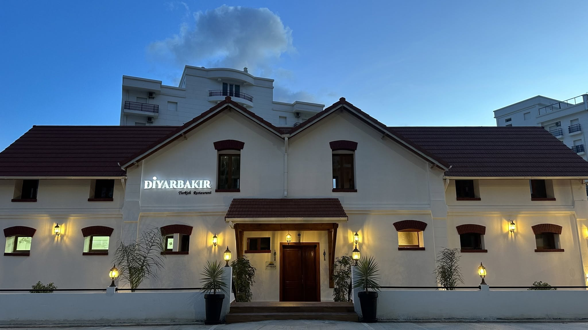

Restaurant turc à Annaba
Les saveurs
authentiques
de Turquie.
Grillades, mezzés et spécialités traditionnelles préparés avec passion.
01 / 03

Notre histoire
Une table inspirée
par la Turquie.
Bienvenue chez Diyarbakir, une adresse où les saveurs de la cuisine turque rencontrent l'ambiance chaleureuse d'Annaba.
Notre cuisine met à l'honneur les grillades, les mezzés et les recettes traditionnelles préparées avec des ingrédients soigneusement sélectionnés.
Découvrir notre carte

Nous trouver
À bientôt
chez Diyarbakir.
Adresse
Château Chancel Zaafrania,
Route de Zaafrania,
Annaba 23000, Algérie
Horaires
Tous les jours
09h00 – 00h00
09h00 – 00h00